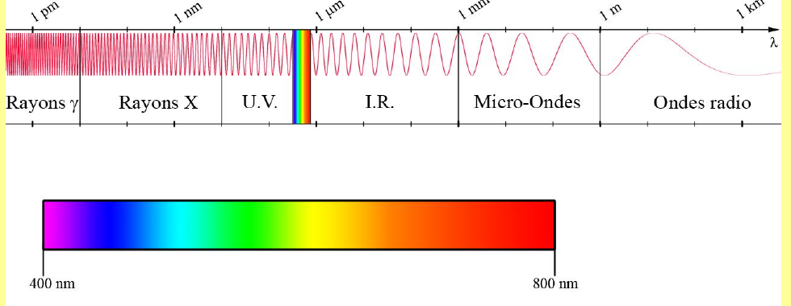

Signal 1 — Ondes progressives
1. Onde progressive
Définition 1
Une onde est la propagation d'une grandeur physique consécutive à une perturbation initiale. On note $c$ la vitesse de propagation (exemple : $c_{son}=340\,\text{m.s}^{-1}$ dans l'air).
Théorème 1
Une onde progressive $s(x,t)$ se propageant selon les $x$ croissants est de la forme générale $s(x,t)=f\!\left(t-\dfrac{x}{c}\right)$ : l'état de perturbation à l'abscisse $x$ est celui qu'avait la source $x/c$ secondes plus tôt.
Une onde progressive se propageant selon les $x$ décroissants est de la forme $s(x,t)=f\!\left(t+\dfrac{x}{c}\right)$.
Une onde progressive se propageant selon les $x$ décroissants est de la forme $s(x,t)=f\!\left(t+\dfrac{x}{c}\right)$.
2. Onde progressive sinusoïdale
Définition 2
Une onde progressive sinusoïdale se propageant selon les $x$ croissants s'écrit :
$$s(x,t) = A\cos\!\left(\omega\left(t-\frac{x}{c}\right)\right) = A\cos(\omega t - kx)$$
où $A$ est l'amplitude, $k=\dfrac{\omega}{c}=\dfrac{2\pi}{\lambda}$ est la pulsation spatiale (m$^{-1}$), et $\omega$ la pulsation temporelle (rad.s$^{-1}$).
3. Relations utiles
Théorème 2
$$T = \frac{2\pi}{\omega} \qquad k = \frac{2\pi}{\lambda} \qquad \lambda = cT \qquad f=\frac1T=\frac{\omega}{2\pi}$$
($T$ : période temporelle ; $\lambda$ : période spatiale ou longueur d'onde ; $f$ : fréquence en Hz.)
4. Ordre de grandeur (spectre électromagnétique)

Quiz de fin de chapitre
1. Qu'est-ce qui distingue une onde progressive « vers les $x$ croissants » d'une onde « vers les $x$ décroissants » dans leur écriture mathématique ?
Réponse
Le signe devant $x/c$ dans l'argument : $s(x,t)=f(t-x/c)$ pour une propagation vers les $x$ croissants, $s(x,t)=f(t+x/c)$ vers les $x$ décroissants (Théorème 1).
Le signe devant $x/c$ dans l'argument : $s(x,t)=f(t-x/c)$ pour une propagation vers les $x$ croissants, $s(x,t)=f(t+x/c)$ vers les $x$ décroissants (Théorème 1).
2. Quelle est la relation entre pulsation spatiale $k$ et longueur d'onde $\lambda$ ?
Réponse
$k = \dfrac{2\pi}{\lambda}$ (Définition 2, Théorème 2), en analogie directe avec $\omega=2\pi/T$ dans le domaine temporel.
$k = \dfrac{2\pi}{\lambda}$ (Définition 2, Théorème 2), en analogie directe avec $\omega=2\pi/T$ dans le domaine temporel.
3. Une onde sonore a pour fréquence $f=440\,\text{Hz}$ (La 3) dans l'air ($c=340\,\text{m/s}$). Calculer sa longueur d'onde.
Réponse
$\lambda=cT=c/f=340/440\approx0{,}77\,\text{m}$ (Théorème 2).
$\lambda=cT=c/f=340/440\approx0{,}77\,\text{m}$ (Théorème 2).
4. Une onde lumineuse a $\lambda=600\,\text{nm}$ dans le vide ($c_0=3\times10^8\,\text{m/s}$). Calculer sa pulsation $\omega$.
Réponse
$f=c_0/\lambda=3\times10^8/(600\times10^{-9})=5\times10^{14}\,\text{Hz}$, donc $\omega=2\pi f\approx3{,}14\times10^{15}\,\text{rad/s}$ (Théorème 2).
$f=c_0/\lambda=3\times10^8/(600\times10^{-9})=5\times10^{14}\,\text{Hz}$, donc $\omega=2\pi f\approx3{,}14\times10^{15}\,\text{rad/s}$ (Théorème 2).
5. Pourquoi l'écriture $s(x,t)=f(t-x/c)$ traduit-elle une propagation « sans déformation » de la perturbation ?
Réponse
Parce que $s$ ne dépend de $x$ et $t$ qu'à travers la combinaison $t-x/c$ : la forme de la fonction $f$ ne change pas, seul l'instant « effectif » vu par chaque abscisse $x$ est décalé de $x/c$ — la perturbation garde exactement le même profil, juste translaté dans l'espace au fil du temps (Théorème 1).
Parce que $s$ ne dépend de $x$ et $t$ qu'à travers la combinaison $t-x/c$ : la forme de la fonction $f$ ne change pas, seul l'instant « effectif » vu par chaque abscisse $x$ est décalé de $x/c$ — la perturbation garde exactement le même profil, juste translaté dans l'espace au fil du temps (Théorème 1).
6. Que se passerait-il dans la formule $s(x,t)=f(t-x/c)$ si $c$ devenait négatif ?
Réponse
Cela reviendrait à inverser le sens de propagation : $f(t-x/c)$ avec $c<0$ équivaut à $f(t+x/|c|)$, qui est la forme d'une onde se propageant vers les $x$ décroissants (Théorème 1) — la vitesse de propagation $c$ porte donc intrinsèquement l'information de direction dans cette convention d'écriture.
Cela reviendrait à inverser le sens de propagation : $f(t-x/c)$ avec $c<0$ équivaut à $f(t+x/|c|)$, qui est la forme d'une onde se propageant vers les $x$ décroissants (Théorème 1) — la vitesse de propagation $c$ porte donc intrinsèquement l'information de direction dans cette convention d'écriture.
7. Piège classique : peut-on confondre la « période spatiale » $\lambda$ et la « période temporelle » $T$ ?
Réponse
Non — $T$ (en secondes) est la durée après laquelle le signal se répète en un point fixe de l'espace, tandis que $\lambda$ (en mètres) est la distance après laquelle le signal se répète à un instant fixé (Théorème 2). Elles sont reliées par $\lambda=cT$, mais ce sont deux grandeurs de nature différente (temps vs longueur) qu'il ne faut pas confondre malgré leur rôle « symétrique » dans les formules.
Non — $T$ (en secondes) est la durée après laquelle le signal se répète en un point fixe de l'espace, tandis que $\lambda$ (en mètres) est la distance après laquelle le signal se répète à un instant fixé (Théorème 2). Elles sont reliées par $\lambda=cT$, mais ce sont deux grandeurs de nature différente (temps vs longueur) qu'il ne faut pas confondre malgré leur rôle « symétrique » dans les formules.
8. Piège classique : dans le spectre électromagnétique (Fig. 1), la lumière visible occupe-t-elle une bande étroite ou large par rapport à l'ensemble du spectre ?
Réponse
Une bande extrêmement étroite (400–800 nm, soit à peine un facteur 2 en longueur d'onde) comparée à l'ensemble du spectre électromagnétique qui s'étend sur plus de 15 ordres de grandeur (du picomètre au kilomètre, Fig. 1) — un piège classique est de sous-estimer à quel point notre perception visuelle ne couvre qu'une fraction infime du spectre réel.
Une bande extrêmement étroite (400–800 nm, soit à peine un facteur 2 en longueur d'onde) comparée à l'ensemble du spectre électromagnétique qui s'étend sur plus de 15 ordres de grandeur (du picomètre au kilomètre, Fig. 1) — un piège classique est de sous-estimer à quel point notre perception visuelle ne couvre qu'une fraction infime du spectre réel.
9. Synthèse : reliez la notion de « pulsation spatiale » $k$ à celle de « pulsation temporelle » $\omega$ via la vitesse de propagation $c$ — pourquoi $k=\omega/c$ traduit-il physiquement le lien entre espace et temps dans une onde progressive ?
Réponse
Dans $s(x,t)=A\cos(\omega t-kx)$, le terme de phase $\omega t - kx$ doit rester constant le long d'un « front d'onde » qui se déplace à la vitesse $c$ ; en différentiant $\omega\,dt-k\,dx=0$ le long de ce front, on obtient $dx/dt=\omega/k=c$, soit $k=\omega/c$ (Définition 2). Cette relation encode donc directement le fait que l'onde parcourt une distance $c\,dt$ pendant chaque intervalle de temps $dt$, reliant ainsi l'échelle spatiale ($k$, $\lambda$) à l'échelle temporelle ($\omega$, $T$) via la célérité $c$.
Dans $s(x,t)=A\cos(\omega t-kx)$, le terme de phase $\omega t - kx$ doit rester constant le long d'un « front d'onde » qui se déplace à la vitesse $c$ ; en différentiant $\omega\,dt-k\,dx=0$ le long de ce front, on obtient $dx/dt=\omega/k=c$, soit $k=\omega/c$ (Définition 2). Cette relation encode donc directement le fait que l'onde parcourt une distance $c\,dt$ pendant chaque intervalle de temps $dt$, reliant ainsi l'échelle spatiale ($k$, $\lambda$) à l'échelle temporelle ($\omega$, $T$) via la célérité $c$.
10. Synthèse : un haut-parleur émet un son de fréquence $f=1000\,\text{Hz}$ dans l'air ($c=340\,\text{m/s}$). Calculez $T$, $\lambda$ et $k$, et vérifiez la cohérence de vos trois résultats avec les relations du Théorème 2.
Réponse
$T=1/f=10^{-3}\,\text{s}=1\,\text{ms}$. $\lambda=cT=340\times10^{-3}=0{,}34\,\text{m}$. $k=2\pi/\lambda=2\pi/0{,}34\approx18{,}5\,\text{rad/m}$. Vérification croisée : $\omega=2\pi f=2\pi\times1000\approx6283\,\text{rad/s}$, et $k=\omega/c=6283/340\approx18{,}5\,\text{rad/m}$ — cohérent avec le calcul direct via $\lambda$, ce qui confirme que les deux définitions de $k$ (via $2\pi/\lambda$ et via $\omega/c$, Définition 2) sont bien équivalentes.
$T=1/f=10^{-3}\,\text{s}=1\,\text{ms}$. $\lambda=cT=340\times10^{-3}=0{,}34\,\text{m}$. $k=2\pi/\lambda=2\pi/0{,}34\approx18{,}5\,\text{rad/m}$. Vérification croisée : $\omega=2\pi f=2\pi\times1000\approx6283\,\text{rad/s}$, et $k=\omega/c=6283/340\approx18{,}5\,\text{rad/m}$ — cohérent avec le calcul direct via $\lambda$, ce qui confirme que les deux définitions de $k$ (via $2\pi/\lambda$ et via $\omega/c$, Définition 2) sont bien équivalentes.
Sources
- Document source : « Ondes Progressives » (résumé de cours, Prépa Barthou, Pau)
- Programme officiel de Physique-Chimie, CPGE 1re année (filière PCSI), bloc « Ondes progressives » : enseignementsup-recherche.gouv.fr
- H-Prépa Physique 1re année (Hachette Éducation) — chapitre « Ondes progressives, ondes sinusoïdales »